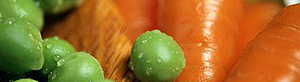

Gemüse/Hackfleischwähe
5 von 6rindshackfliesch bei grosser hizte gut anbraten, beiseite stellen. karotten, kohlrabi,
zuchetti und eine zwiebel in streifen schneiden und ebenfalls anbraten. erbsli beigeben
und alles würzen. fleisch beigeben. in ein rundes bläch einen blätterteig auslegen und wenig
paniermehl darüber streuen (boden wird nicht latschig!). das gemüse gleichmässig
verteilen. ein ei und ein wenig milch mit einer gabel verklopfen und darüber geben.
25 minuten bei ca. 200 grad im ofen bachen.
